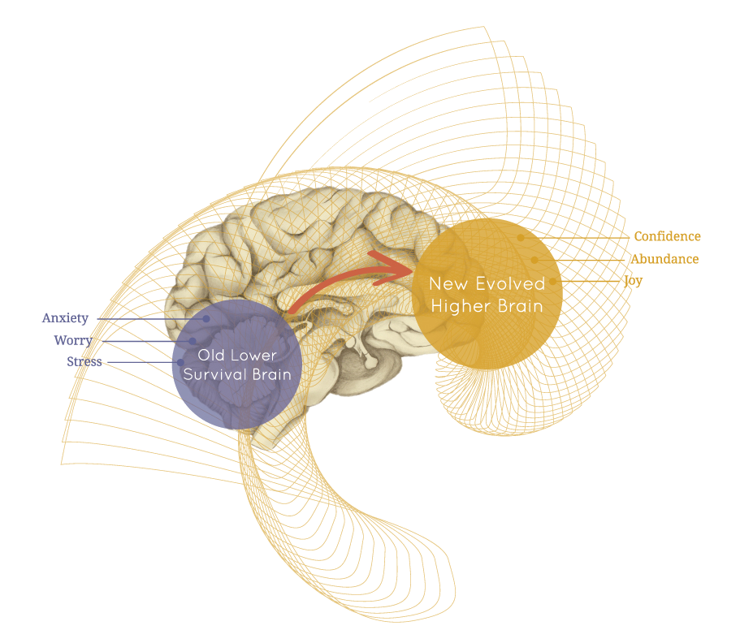

Tatyana Kukso, Licensed Higher Brain Living® Facilitator
My Mission
I work with people who have had a traumatic experience, and are struggling with fear, instability and insecurity. I help you feel safe, secure and loved, and move forward in life with confidence!
My Story
About fifteen years ago I began to search
for a way to transform my life. I explored
many different teachings and methods but
nothing seemed to work fully and
permanently.
In 2013 I discovered Higher Brain
Living®. I
went through all 22 sessions of the Higher Brain
Living® program and I've experienced
sustainable results in the transformation of
my life. I then decided to help others
experience the same transformation that I
did. I enrolled in and completed the Higher
Brain Living® Facilitator Training and began
my own practice. I'm looking forward to
helping everyone else who struggles to make
the changes that they want to see in their
life - including you!
You too can experience transformational change!
Based on the most progressive knowledge of 21st century neuroscience with roots in ancient wisdom that dates back to 5,000 ago, Higher Brain Living® is transformational, proven and repeatable.
Through a series of 22 sessions led by a highly trained Higher Brain Living® Facilitator, subtle energy neuro-pathways are opened and activated through touch. The process creates waves of energy and a salutogenic breathing response that releases stress, rejuvenates and reorganizes every cell in the body.
The Higher Brain Living® experience is much more expansive than a series of sessions on a session table. Clients also receive comprehensive tools to help navigate out of chronic emotional blockages and into the joyful, vertical growth reality of Higher Brain Living®, helping rapidly propel them into the life of their dreams.
